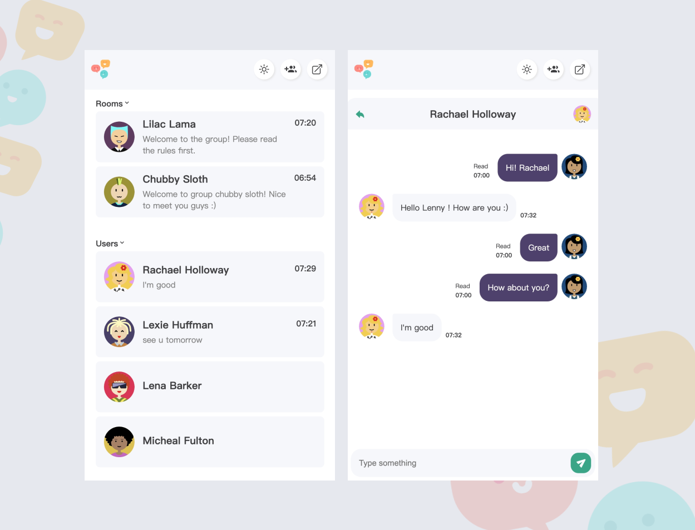
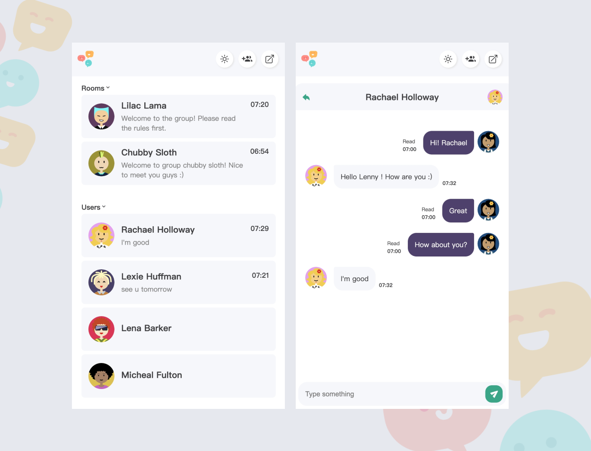

Hello, It's Me
Chathumini Pamodya
And I am a undergraduate IT student
As an IT student, I am immersed in a dynamic field that blends innovation with problem-solving.
Download CV
As an IT student, I am immersed in a dynamic field that blends innovation with problem-solving.
Download CV
 

The Hospital Management System I developed is a robust and user-friendly software solution tailored to meet the specific needs of healthcare facilities. Built on modern technologies including React.js for the frontend, Material-UI for design components, .NET for backend services, and MS SQL for database management, this system offers several key features and benefits:
The chat application I developed using the MERN stack offers a modern and scalable solution for real-time communication. Leveraging MongoDB, Express.js, React.js, and Node.js, this application provides users with a seamless and intuitive platform to exchange messages, share media, and connect with others in real-time. Here's an overview of its key features and functionalities:
As an IT student, I have acquired proficiency in several programming languages, including Java and Python. Java, renowned for its platform independence and versatility, is extensively used in enterprise applications, Android app development, and large-scale systems due to its strong object-oriented programming paradigm and robust ecosystem of libraries and frameworks. Python, known for its simplicity and readability, is widely employed in various domains such as web development, data analysis, artificial intelligence, and scientific computing, owing to its rich set of libraries, dynamic typing, and ease of use. Additionally, I have also gained familiarity with other languages like C/C++, JavaScript, and SQL, each offering unique strengths and applications in software development, ranging from low-level system programming to dynamic web applications and database management. These languages collectively provide me with a diverse skill set to tackle a wide array of programming challenges and projects.
Read moreAs an IT student, I have honed my web development skills using a variety of tools and technologies. I am proficient in front-end development, with expertise in HTML, CSS, and JavaScript, which are essential for creating interactive and visually appealing user interfaces. I have hands-on experience with modern JavaScript frameworks and libraries such as React.js, Vue.js, and Angular, allowing me to build dynamic and responsive web applications efficiently. In addition to front-end development, I have a strong foundation in back-end development, utilizing server-side languages and frameworks like Node.js, Express.js, and Flask to implement server logic, handle data processing, and interact with databases. Furthermore, I am proficient in database management systems such as MySQL, MongoDB, and PostgreSQL, enabling me to design and optimize database schemas, write complex queries, and ensure data integrity. With my comprehensive web development skills, I am equipped to develop full-stack web applications that deliver seamless user experiences and robust functionality.
Read moreAs an IT student deeply passionate about graphic design, I constantly seek to broaden my creative horizons and push the limits of my skills. In addition to mastering the technical intricacies of Adobe Photoshop and Adobe Illustrator, I actively engage with diverse design influences, drawing inspiration from art history, contemporary trends, and interdisciplinary perspectives. I thrive on experimentation, exploring a spectrum of styles, techniques, and mediums to breathe life into my artistic visions. Whether crafting sleek user interfaces, developing captivating branding materials, or producing evocative illustrations, I approach each project with boundless enthusiasm and unwavering dedication. Infusing my work with personality, emotion, and purpose, I aspire to create impactful designs that resonate deeply with audiences and leave a lasting impression. Through my relentless pursuit of excellence and my unyielding passion for design, I strive to make a meaningful contribution to the realms of technology and beyond, one pixel, stroke, and composition at a time.
Read more